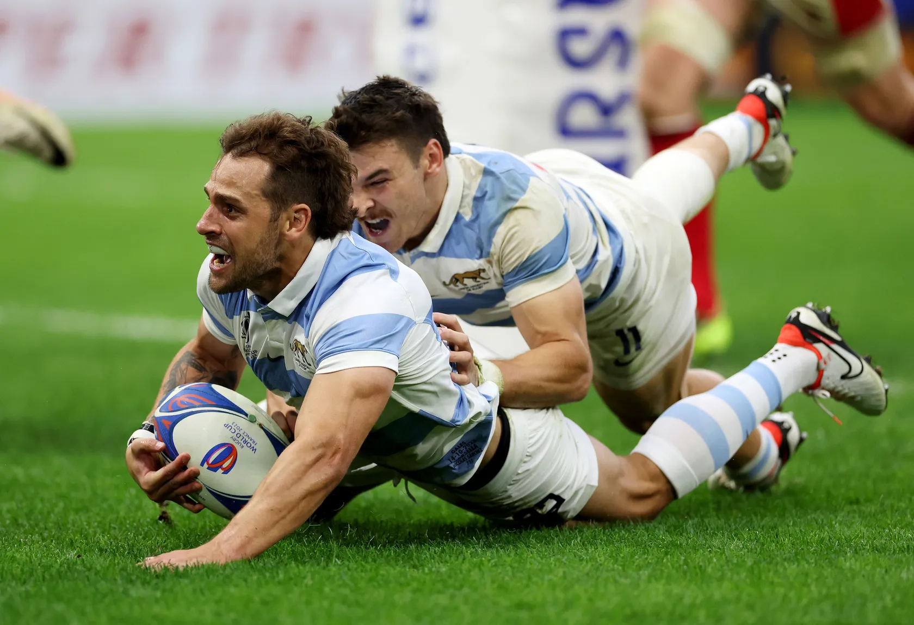

Ramiro Quiroga
addCórdoba, Argentina
Hace un tiempo, se interesó por el código, hizo algunos cursos más simples, pero ya fue
viendo que le gustaba esto y decidió a tomar unos estudios en serio.
Estudió un poco de Psicologia y siempre ha trabajado en el mundo de las ventas.
Su hobbie es su trabajo actual, es jugador de rugby profesional aquí en Valencia y compagina con
estudios.
Sus puntos fuertes son: la parte humana y grupal. Analista de situaciones, proyectos y cambios.
Su punto a trabajar: parte de diseño.
Su objetivo principal con el curso es poder trabajar de esto, es por ello que hizo un proyecto final de
Portfolio.
Dato curioso